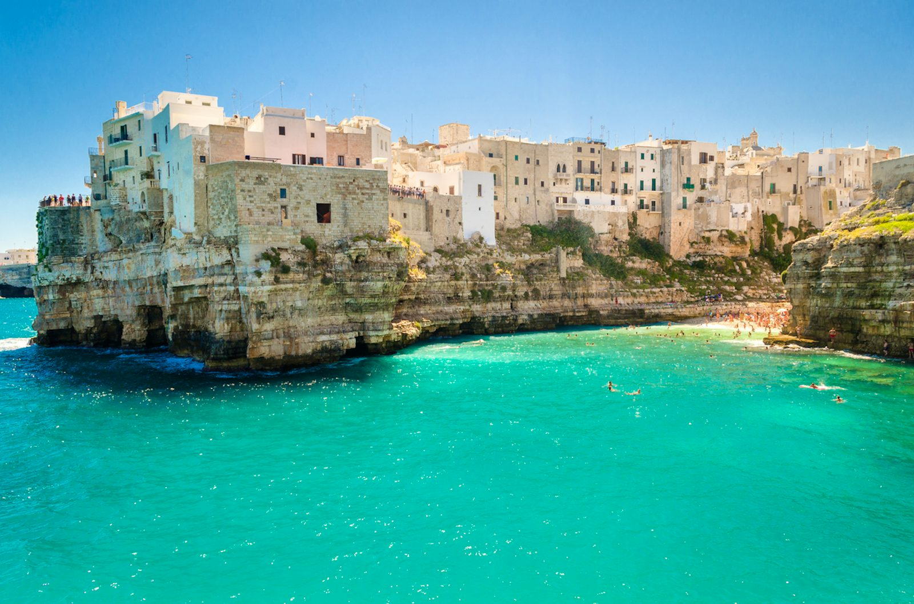
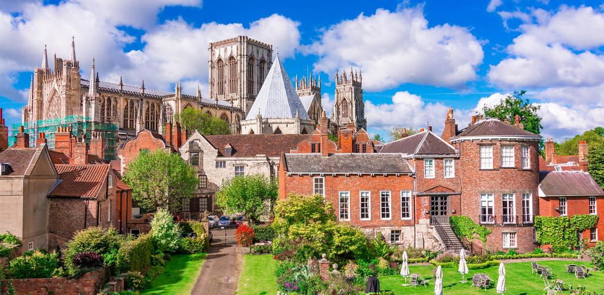
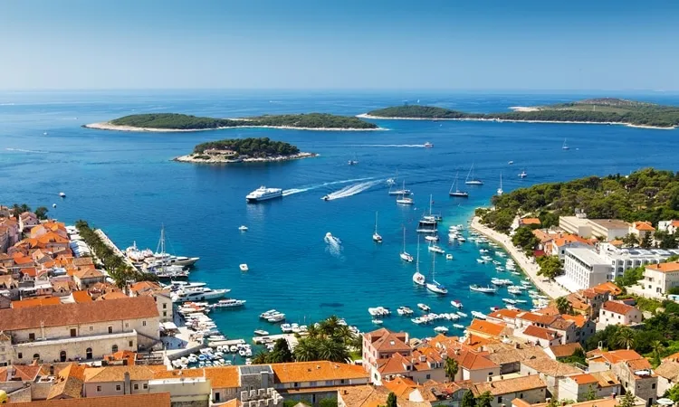

Bem-vindo à Eurotour, a agência de turismo que vai te levar a descobrir os segredos escondidos da Europa. Nossa missão é mostrar a você pontos turísticos pouco conhecidos, fugindo do comum e proporcionando experiências únicas. Com roteiros personalizados e exclusivos, nossa equipe está pronta para te guiar por uma jornada inesquecível, explorando os encantos escondidos do continente europeu. Junte-se a nós e descubra um novo lado da Europa com a Eurotour.
Apúlia, fica na região do sul, que forma o calcanhar da Itália meridional e é banhada pelos mares Adriático e Jônico.
Apesar de Londres ser a cidade mais famosa da Inglaterra, York é uma das cidades mais interessantes (e também uma das mais bonitas, de acordo com muitos visitantes), por mesclar o passado – museus, casinhas de madeira, a catedral em estilo gótico do século XIII com vitrais medievais e dois campanários funcionais, bem como vários outros monumentos – com o presente – possui vias modernas e organizadas, cafés, restaurantes e boates.
Hvar é uma ilha da Croácia no mar Adriático, uma das mais belas ilhas da Dalmácia. Também conhecida como uma estância de verão, possui uma cultura e uma história única, com elementos que relembram sua importância náutica na Idade Média.
